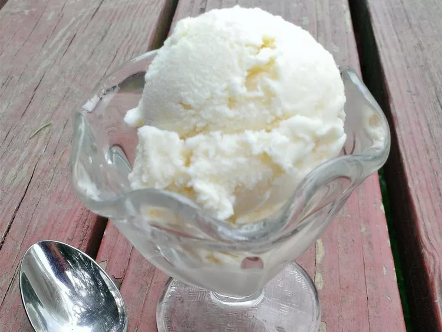

How To Make Vanilla Ice Cream

Description
your day is bad? want something sweet and chilly to brighten it a bit?
fear not! because we got you covered! homemade ice cream made with easy to find ingredients!
want to learn how to make it? then let's follow this guide!
ingredients :
- Milk: This homemade vanilla ice cream starts with 2 ¼ cups of milk.
- Heavy whipping cream: A cup of heavy whipping cream comes next.
- Sugar: White sugar sweetens things up.
- Vanilla: Two teaspoons of vanilla extract enhances the overall flavor.
Directions
- Cook the milk, cream, and sugar until the sugar has dissolved.
- Transfer the mixture to a measuring cup, then add the vanilla extract. Chill overnight.
- Pour the mix into an ice cream maker and churn according to the manufacturer's directions.
- Serve immediately or ripen in the freezer before serving.
and, that's it! your homemade ice cream is now finished! enjoy it with some syrup on top or just scoop it out the woof!
credit to this helpful site!
click here to return into the main page!